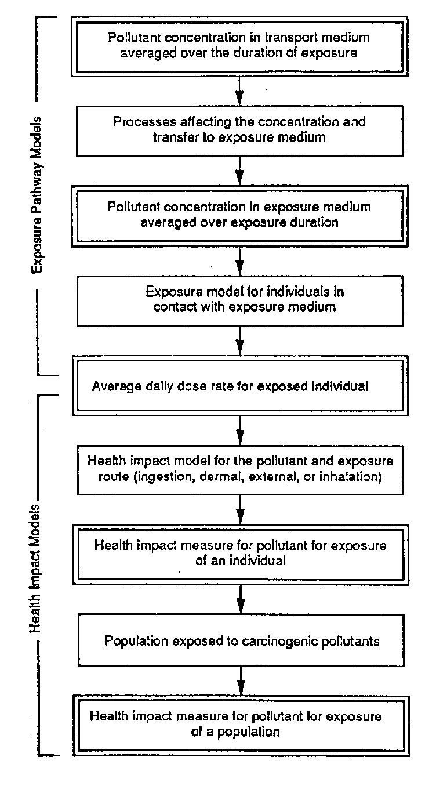

1.0 INTRODUCTION
The exposure pathway
and health impact assessment component of the Multimedia Environmental
Pollutant Assessment System (MEPAS) provides an estimate of health impacts
to selected individuals and populations from exposure to pollutants. The
exposure pathway analysis starts with pollutant concentration in a transport
medium and estimates the average daily dose(a) to exposed individuals
from contact with the transport medium or a secondary medium contaminated
by the transport medium. The average daily dose is then used to estimate
a measure of health impact appropriate to the type of pollutant considered.
Each exposure pathway analysis in MEPAS involves
definition of a transport medium (or medium of measurement), an exposure
route for transfer of pollutant from the transport medium to man, exposure
conditions for the individual receiving the pollutant, and conversion of
the average daily dose to a measure of health impact. These steps are illustrated
in Figure 1.1 for all transport and exposure pathways except exposure to
measured direct radiation fields. The direct radiation exposure pathway
does not involve a specific pollutant, but rather is used to estimate health
impacts from exposure to a measured radiation field. With this exception,
the steps for the measured direct radiation pathway parallel those indicated
in Figure 1.1
The pollutant concentration
in the transport medium is the starting point for the exposure and health
impact analysis. This concentration is generally represented within MEPAS
as a 70-year averaged value. When the exposure duration is less than 70
years, the concentration represents the average for the exposure duration
considered for a given exposure scenario.
(a) In the remainder of this section on exposure
pathway and human health impact assessment models, the term average daily
dose will be used to represent the average daily intake rate of chemicals
(mg/kg/d), the average radiation dose rate from intake of radionuclides
(rem/d), and the average external radiation dose rate (rem/d).

FIGURE 1.1 General Components of an Exposure/Health Impact Analysis
Such an average value can be provided by the user for the measured soil
concentration and measured food concentration transport pathways. For other
transport pathways, the calculated 70-year average value is used as an
approximation for individual and population exposures.
The transport medium may or may not be the medium
of exposure. For example, the groundwater transport pathway generates estimates
of pollutant concentration at the well. In this case, the well water is
also the medium of exposure, although some modifications to the concentration
are possible during transfer through the treatment plant and distribution
system to the individuals exposed during domestic water uses. When the
well water is used for irrigation of agriculture crops, the exposure medium
is not the well water, but the foods produced. For agricultural pathways,
models are use to estimate the transfer of pollutants from the irrigation
water to the food consumed by humans. For each transport and exposure pathway,
the processes affecting the concentration and transfer to the exposure
medium are defined in the following sections.
The average daily
dose of a pollutant for an exposure pathway involves consideration of the
rate of intake (ingestion, dermal absorption, inhalation, or external radiation
dose), the frequency of exposure, the exposure duration, the averaging
time, and the body weight of the exposed individual or an average member
of the population. The general method for converting the medium concentration
to average daily dose is described in Section 2.0. Detailed applications
to specific pathways are described in subsections of Section 2.0.
Health impact models
are used to estimate the health impacts from exposure to the pollutant
of concern. Models are defined for noncarcinogenic chemicals, carcinogenic
chemicals, and radionuclides and radiation dose in Section 3.0. When populations
are exposed to carcinogenic pollutants, including radiation, estimates
of health impacts to an exposed population may also be made by multiplication
of the effect to an average member of the population by the number of people
in the exposed population.
The models for the exposure pathway and health impact
assessments require definition of several parameters. A summary of the
notation used for the parameters in the exposure pathway and health impact
models is given in Section 4.0. The default values used in MEPAS for these
parameters are presented and discussed in Section 5.0.
Appendix A provides
auxiliary equations used to calculate intermediate summary intake factors.
Appendix B describes the algorithms used to evaluate radioactive chain
decay.